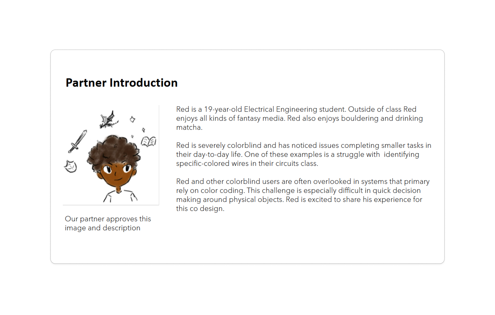
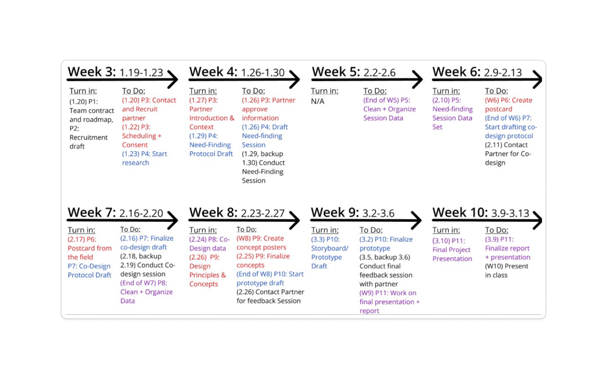
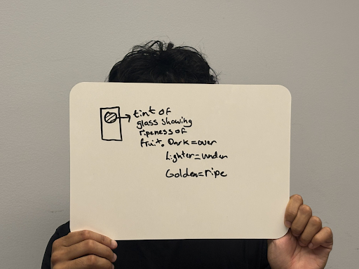
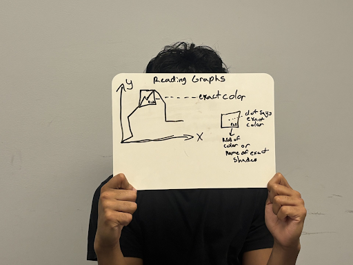
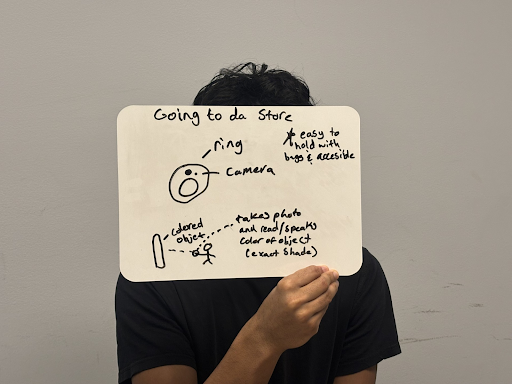
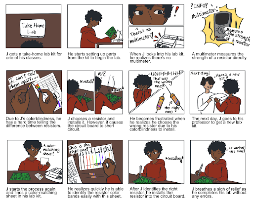

Accessible Resistor Color Sheet
Project Leader • HCDE 315 Inclusive Design

I led a partner-centered design project as an HCDE student, drawing from my own experience with colorblindness to focus on accessibility. Wanting to take on a challenge close to home, I guided the research, co-design, and prototyping process to create a physical resistor color sheet that helps students more quickly and accurately identify resistor bands.
Project Overview
Project Leader
Inclusive Design, Accessibility, Human-Centered Design
January - March 2026 (10 weeks)
Partner Research, Storyboarding, Co-Design, Data Analysis, Feedback Synthesis
The project began broadly, exploring accessibility needs for colorblind students across multiple contexts. After early research, we focused specifically on ECE lab tools, where small, color-coded resistors present recurring challenges. As project leader, I pushed this focus, coordinated the team schedule, and ensured research and design activities aligned with our goals.
Meet Our Partner

We partnered with a colorblind ECE student who shared their personal experiences and lab pain points. Their insights were central to shaping our design direction and ensuring the tool addressed real user needs.
Project Roadmap & Scope

We maintained a broad research perspective initially, exploring general colorblind accessibility challenges, then narrowed focus to ECE resistors. As project leader, I planned our team schedule, making sure we met course requirements while properly scoping our personal project. This required defining milestones, setting datas to complete assignmnets, and ensuring alignment between research findings and design decisions.
- Established 10-week timeline with weekly goals and check-ins
- Prioritized research → co-design → prototyping → testing → final review
- Guided team discussions to balance exploration and focused ECE deliverables
Need-Finding & Research Insights
We conducted two types of interviews with our partner. The first was a semi-structured interview and activity. This activity included color sorting exercises, and journey mapping to capture challenges and context. Data was analyzed for themes, highlighting pain points with existing lab tools, and opportunities for an accessible design.
The second interview we conducted was a co-design session, where we used data we found to sketch ideas for accessible handheld tools (a big area of need that we found in our previous interview), this session ultimately lead to our final design.



- Identified difficulties with small resistor bands, reflective surfaces, and reliance on color-only coding
- Confirmed preference for low-tech, hands-free solutions that fit into existing workflows
- Recognized importance of contextual cues and labeling for accurate color identification
Low-Fidelity Prototyping
.png)
.png)
.png)
We sketched multiple design concepts, including alternative color-matching strategies and physical formats. Co-design sessions with our partner allowed iterative refinement, ultimately converging on the physical color sheet as the most practical solution.
- Explored three major concepts: color sheet, color-detecting ring, shade picker
- Prioritized physical sheet based on convenience, accuracy, and partner feedback
- Incorporated partner suggestions for line thickness, labeling, and usability
Final Design
The final design is a physical sheet with color lines matching the thickness of resistor bands, each line labeled for clarity. Students align resistors on the sheet to visually confirm band colors before using traditional calculation tools. This improves speed, accuracy, and confidence in lab work.
To express our final prototype we also created a storyboard to better express our idea.

- 1:1 scale color lines for direct comparison
- Clear labels and visual hierarchy for easy identification
- Integration into existing ECE classrooms without additional devices
- Design reflects partner feedback and real-world constraints
Tools & Skills
- Human-centered research: interviews, need-finding, and co-design
- Inclusive and accessible design
- Project planning and team leadership
- Prototyping and storyboarding
- Data analysis and synthesis
- User testing and feedback iteration
Outcome & Reflection
The resistor color sheet provides a practical, low-tech solution to a common accessibility challenge in ECE labs. Partner feedback indicates improved accuracy and efficiency when identifying resistor bands. The project emphasizes the value of inclusive design, iterative prototyping, and structured team leadership in solving real-world problems.
Future steps include implementing the tool in ECE classrooms, refining visual hierarchy and line widths, and exploring additional accessibility features. This project highlights my ability to lead research, manage scope, and translate user needs into a practical, impactful design solution.